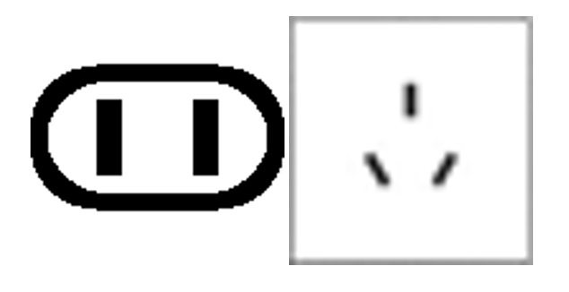

Meeting location
Nanjing University of Information Science and Technology (NUIST)
No.219, Ningliu Road, Nanjing, Jiangsu, China (Postcode: 210044)
Hotels
Hotel A: Nanqi Hotel
Location: on campus (NUIST)
Rates: Single/ Standard room (~325 RMB or 45 USD)
Hotel B: Nanjing Yangzi River Conference Center Longshan Lake Hotel
Location: No. 7 Yaogu Avenue, Jiangbei New Area, Pukou District, Nanjing
(5 km far away from the NUIST campus. There will be free shuttle between hotel and NUIST)
Rates:Single/ Standard room (~380 RMB or 52 USD)
*Hotel fee is paid on arrival. Please register as early as possible to secure a preferred room.
Visa
If a visa is required to visit China, please go to the visa application website: https://cova.mfa.gov.cn/qzCoCommonController.do?show&pageId=index&locale=en_US
Transportation
Nanjing Lukou International Airport (NKG): it takes about 1 hour by car from NKG to NUIST.
Nanjing South railway station: it takes about 45 min by car from the railway station to NUIST. With the high-speed railway, it takes about 3.5 hours from Beijing to Nanjing and about 1 hour from Shanghai to Nanjing.
Money
Local currency is the Chinese Yuan (RMB), with the approximate value 1 Euro = 7.59 RMB, 1 USD = 7.29 RMB (Rates on December 2024). The exchange rates are subject to daily variations. Chinese currency is decimal. Notes come in 100, 50, 20, 10, 5, and 1 yuan denominations. Major currencies can be exchanged at the hotels or banks nearby. The most common credit cards (e.g., Visa, MasterCard) are accepted at major hotels and stores.
Electricity
The electric current in China is 220V, 50/Hz, and the plugs below can be used. If your appliance’s plug has a different shape, you may need a plug adapter.

Weather and Climate
For information on the temperature during May, daily weather forecasts, etc, please visit the websites either at: http://www.cma.gov.cn/en/.
Time
The China Standard Time (Beijing Standard Time) is eight hours ahead of UTC/GMT.